Viajar não é apenas visitar lugares e fazer fotos. Viajar é permitir que sua mudança interna aconteça. É algo transformador.
Comprar na Amazon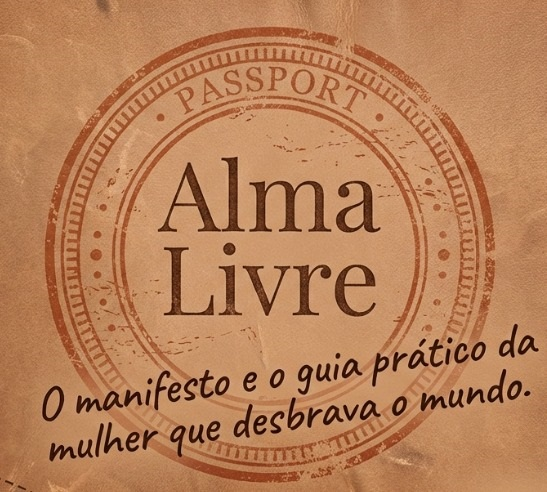
Já passei horas namorando sites e catálogos de viagem, imaginando quando e como poderia conhecer aqueles lugares que pareciam tão distantes da minha realidade. Talvez você também já tenha feito isso: olhar fotos de destinos incríveis e pensar que viajar é um sonho difícil de alcançar. Eu também pensava assim.
Cheguei até a fazer um empréstimo para realizar minha primeira viagem internacional, tamanha era a vontade de explorar o mundo, experimentar o novo e sair da zona de conforto. E quando finalmente desembarquei longe do meu país, percebi algo transformador: viajar não é apenas para alguns — é para quem decide acreditar que também pode dar o primeiro passo.
Você já sentiu que o mundo espera que você siga um roteiro pré-definido? Alma Livre é um convite para rasgar esse roteiro.
Inspirada pelo legado de coragem das minhas avós, esta obra explora a viagem como um afastamento consciente das expectativas alheias.
Porque viajar sozinha é o maior ato de autoconhecimento que uma mulher pode exercer.
A transformação de imprevistos e barreiras em degraus para a autoconfiança.
Um olhar sensível sobre como viajar molda nossa identidade.
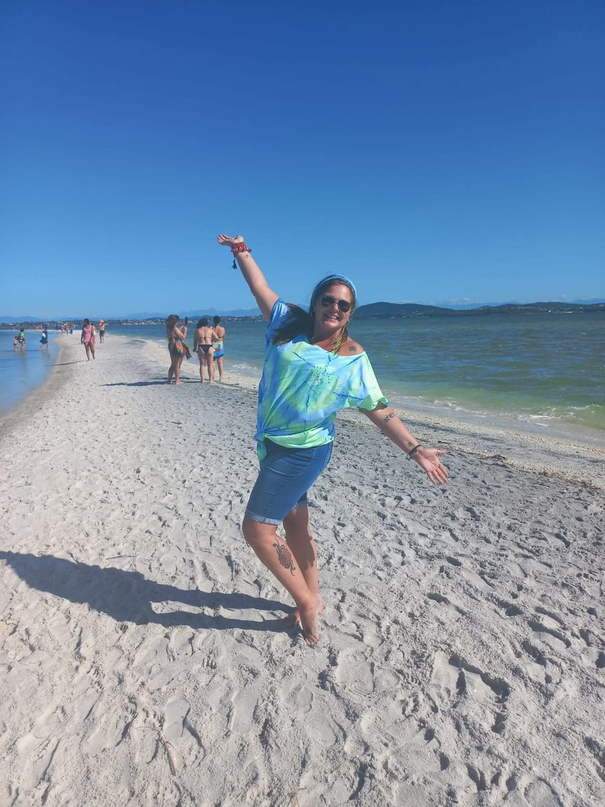
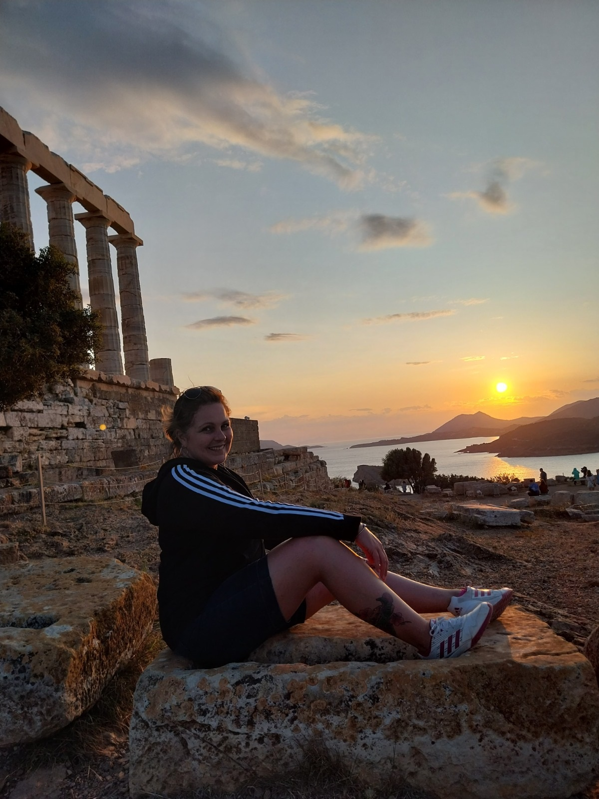
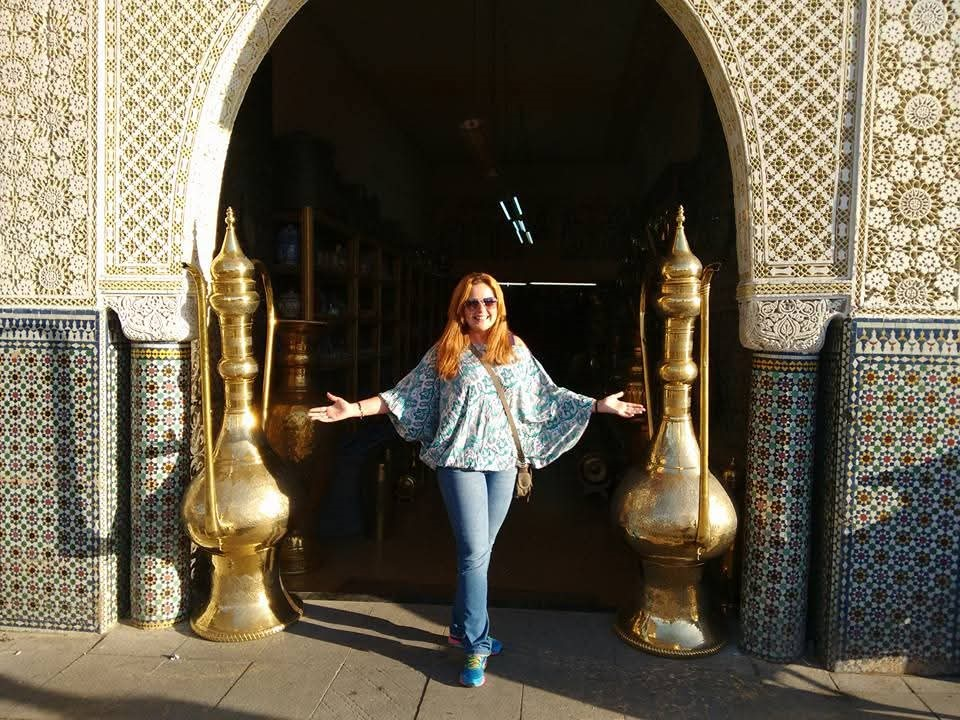
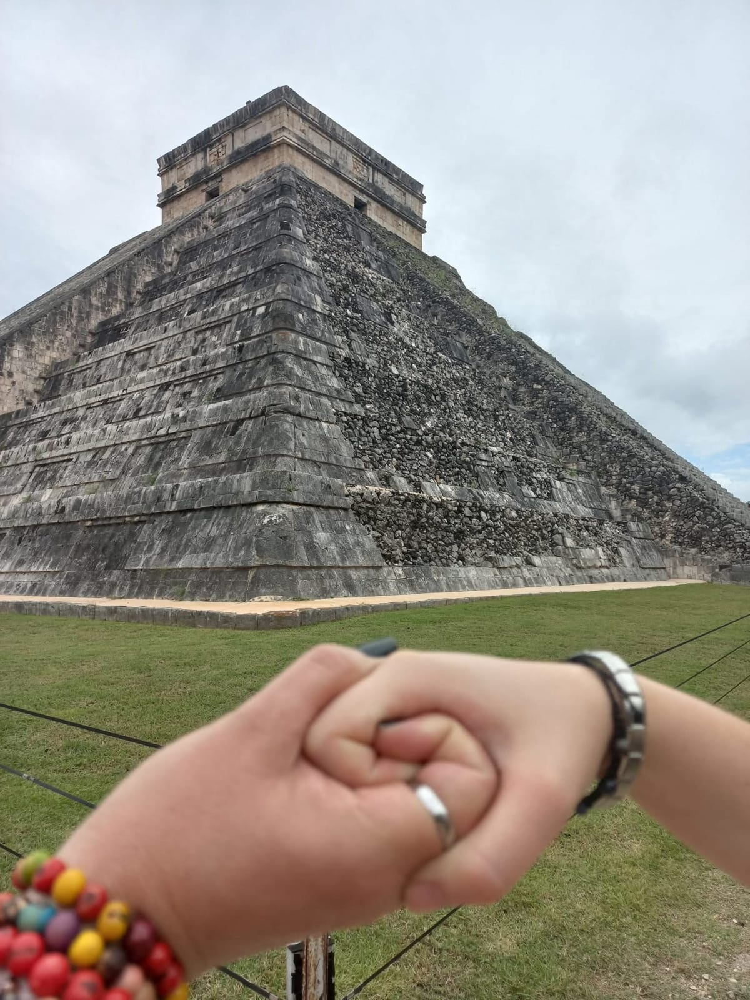
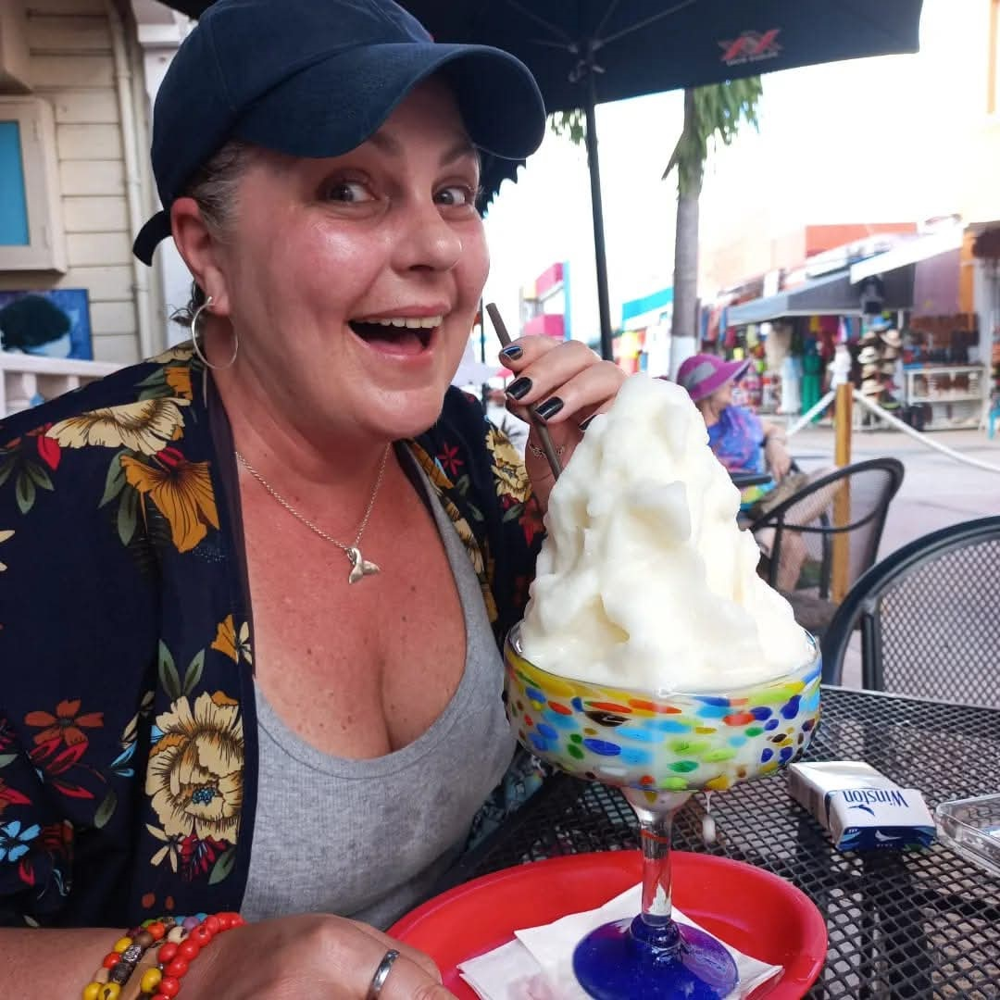
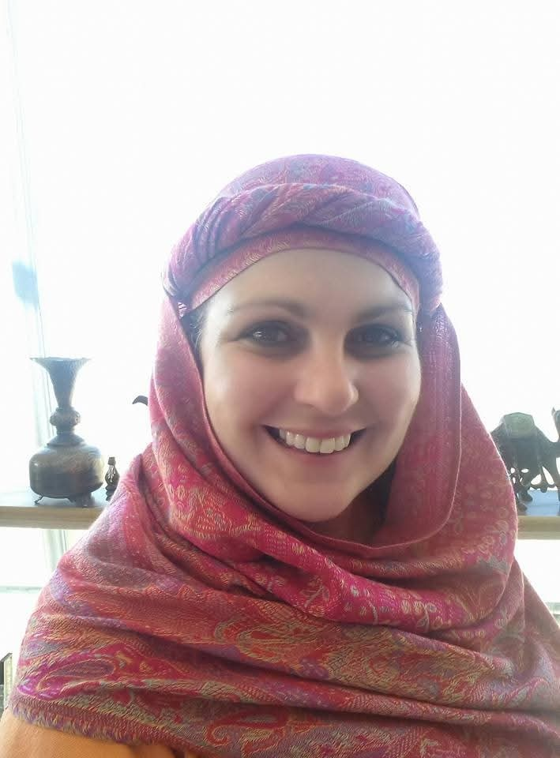
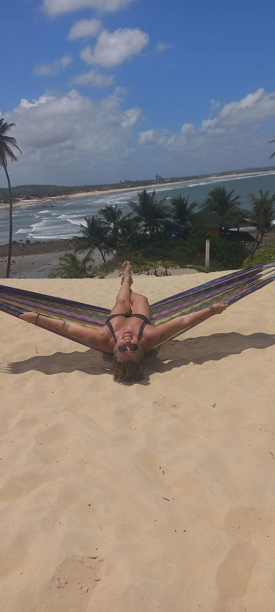
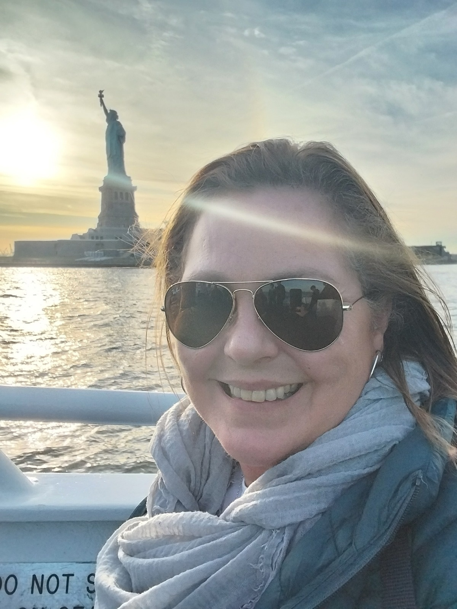
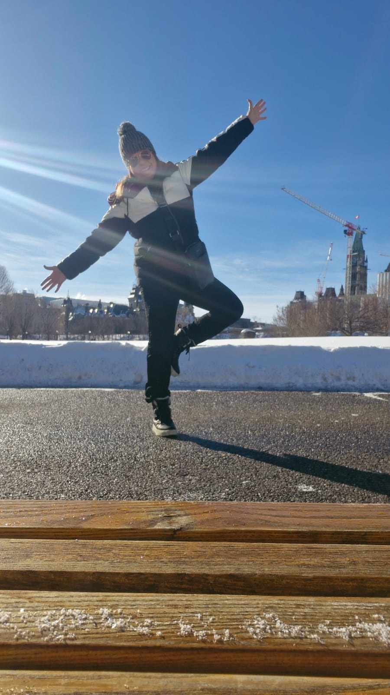
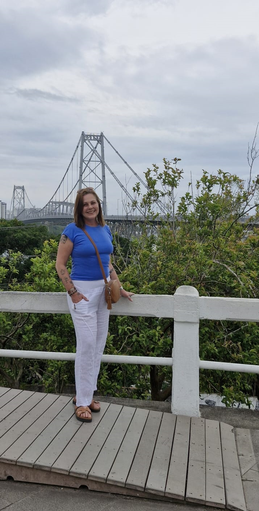
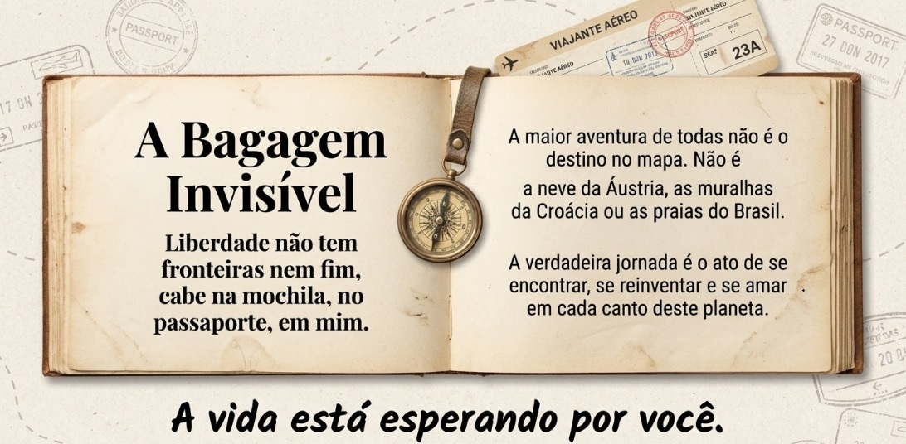
Minhas avós foram minhas primeiras inspirações: verdadeiras fortalezas com rodinhas nos pés. Mais do que herança, elas me deixaram meu primeiro mapa — um mapa de coragem.
Viajar sozinha é um ato de subversão. É o momento em que decidimos, conscientemente, deixar de lado os papéis que a sociedade nos impõe para descobrir quem somos quando ninguém está olhando.
Em Alma Livre, cada desafio — a barreira do idioma, o frio na barriga de um voo perdido, o quebra-cabeça de um mapa desconhecido — revela-se como uma pequena, mas grandiosa vitória. Aqui, as lágrimas de frustração não são o fim, mas o combustível para sorrisos de triunfo. Esta não é uma jornada sobre ticar destinos em uma lista; é sobre permitir que o mundo transforme você.
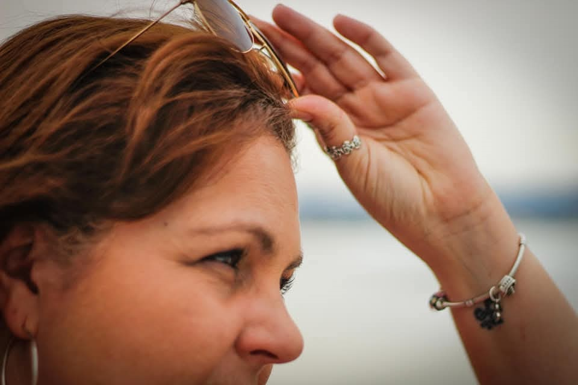
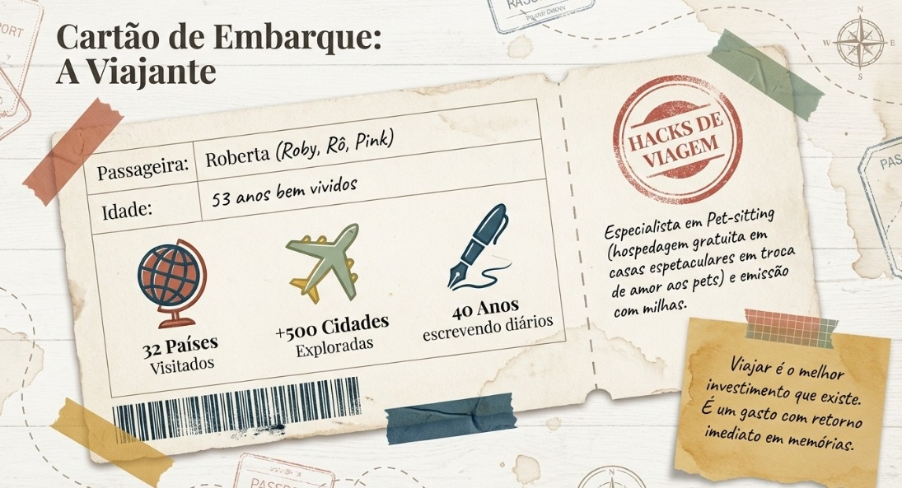
O maior obstáculo é a nossa própria voz, aquele medo que foi internalizado por anos. A viagem se torna o campo de batalha contra esse medo. É algo tão absurdo que se torna brilhante. É como se a cidade que está visitando dissesse: “Aqui a gente não se leva tão a sério”. Longe de casa você vai ao supermercado do bairro, à padaria da esquina. Vive um pouco do cotidiano local em vez de apenas observar de longe.
@roberta2772 @your_home_teachersCuritiba — 21 de março, das 16h às 19h (sábado) — Encontro de Autores: Autores em Cena. Rua Nilo Peçanha, nº 1907.
Curitiba — 22 de março, das 13h às 16h (domingo) — Encontro de Autores: Autores em Cena. Rua Nilo Peçanha, nº 1907.
Joinville — 31 de maio, das 13h às 16h — Festival Literário de Santa Catarina.
São Paulo — 06 de setembro, às 19h40 — Palestra na Bienal do Livro.